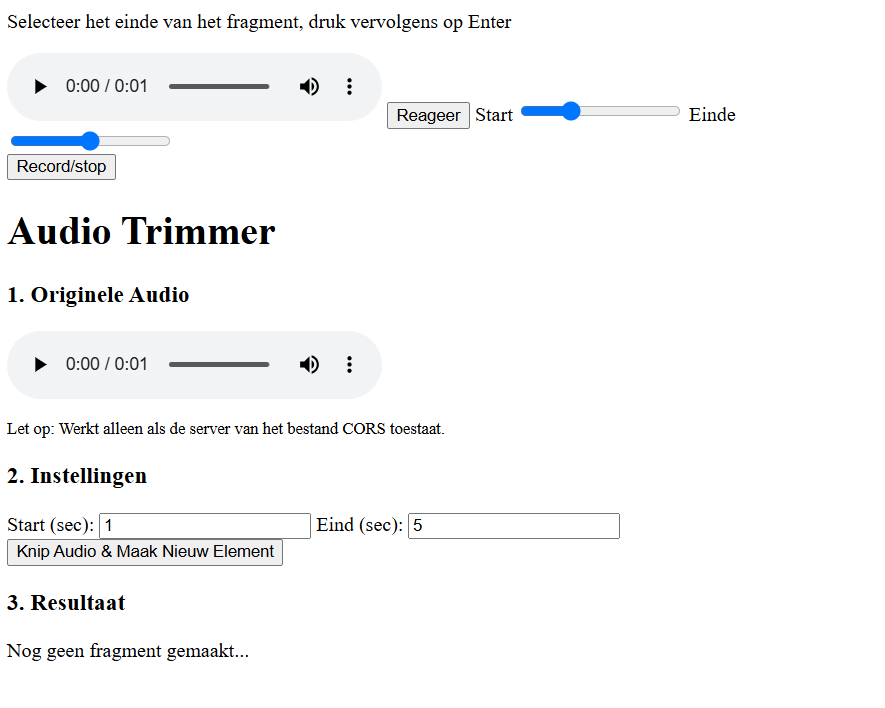

Voor HCD is mijn opdracht om een website te maken voor Berend, hij werkt bij een startup die zich bezighoudt met indoor navigatie en hij is ervaringsprofessional bij Stichting Accessibility. Berend is ook blind en gebruikt een screenreader om het web te navigeren.
Ik heb ervoor gekozen om een website te maken waar je spraakopnames mee op kunt nemen. Dit heb ik gekozen omdat Berend vaak spraakopnames gebruikt om te communiceren. Het probleem waar Berend tegenaanloopt met spraakopnames is dat het lastig is om gelijk te reageren op iets wat iemand zegt in de spraakopname. Je moet namelijk eerst wachten totdat je de hele spraakopname hebt afgeluisterd en zelfs dan is het voor de ontvanger soms onduidelijk op welk stuk je reageert.
Omdat dit iets is waar ik mij heel erg in kan herkennen lijkt het me een leuke uitdaging om hier een oplossing voor te verzinnen.
Mijn oplossing
Om het op te lossen ben ik begonnen met een 'audio-cutter'. Waarom zou er verschil moeten zijn tussen het knippen van audio en het knippen van video?

Het idee hierbij was dat je uit een spraakopname zelf een fragment kon knippen, net zoals bij het knippen van een video. In de eerste week heeft Berend dit getest, maar hieruit bleek dat de handelingen die je moest doen te veel waren. Hierdoor was het niet geschikt om in te springen in een spraakbericht.
Berend zei wel dat hij dit een super tool zou vinden voor het knippen van andere audio bestanden zoals liedjes. Dus ik ben blij dat het product wel voor bijvoorbeeld andere dingen gebruikt kan worden.
Omdat dit niet de opdracht was ben ik het anders gaan aanpakken; wat als je context krijgt door standaard 5 seconden van het stukje waar je op reageert te horen krijgt? Dit werkte wel erg fijn, omdat er een heel proces eigenlijk werd geautomatiseerd. Het enige jammere hiermee is wel dat je niet kunt bepalen hoeveel seconden je terug wilt spoelen.
Ik vond dit wel de beste oplossing die ik heb gevonden hiervoor, omdat tijdens het reageren op de spraakopname voelt het echt alsof je iemand onderbreekt en hier dan ook op reageert. Verder kwam er ook uit meerdere iteraties dat Berend het fijn vond om spraakopnames op te kunnen zoeken. Daarom heb ik ook een transcribeer knop bij iedere spraakopname gemaakt. Deze transcribeert de spraakopnames, en hierdoor kun je ze dus ook gemakkelijk terug zoeken.
Achteraf vond ik het wel jammer dat ik niet meer nonsense heb toegevoegd, omdat ik hierdoor ook niet op bijzondere bevindingen kwam. De volgende keer wil ik dus meer gaan experimenteren hiermee.